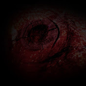

Hvað er Eye Observe?
Eye Observe er YouTube rás sem er með 23 vídeó sem öll hafa eitthvað sérstakt að segja. Rásin er bara með 136 áskrifendur á tímanum sem ég skrifa þetta, Eye Observe birti bara í nokkra mánuði áður en þau hættu árið 2016.
Eye Observe 
Eye Observe er YouTube rás sem er með 23 vídeó sem öll hafa eitthvað sérstakt að segja. Rásin er bara með 136 áskrifendur á tímanum sem ég skrifa þetta, Eye Observe birti bara í nokkra mánuði áður en þau hættu árið 2016.
VARÚÐ: MJÖG HÁVÆRT!
Fyrstu 18 sekúndur myndbandsins eru fylltar með háum samhengislausum hávaða, eftir það heyrir þú samfellda en ógreinilega ræðu í 2 og hálfa sekúndu, enn að reyna að átta mig á því hvað það segir. Svo segir hátt brengluð rödd á hægra eyra “??? one nineteen". Í myndbandsupptökunum sjálfum eru það börn sem stilla sér upp með Biblíuna í höndunum væntanlega í kirkju, 11 sekúndur í blikkandi myndum af andlitum sem virðast vera handahófskennd (þó að þetta séu allir fullorðnir menn) og stafurinn „A“ ofan á öllum myndir. Það sker í svart og gefur töluna „4“. Falin og / eða dulkóðuð skilaboð: Lýsingin er með tvíunderkóða og segir "I need 4 math is key". Það eru nokkrar sekúndur af fullkominni þögn þar til þú heyrir hljóða rödd, svo litla að hún heyrist aðeins við hámarks hljóðstyrk segja „James“. Þetta þýðir að það er að tala um vers Biblíunnar Jakobsbréfið 1:19, þar sem segir „Vitið þetta, elskuð systkin. Hver maður skal vera fljótur til að heyra, seinn til að tala, seinn til reiði,“, ef þú myndir halda áfram versinu til 1:20 myndi það ljúka með „því að reiði manns ávinnur ekki það sem rétt er í augum Guðs.“
Talan 4 sem er sýnd.
VARÚÐ: MJÖG HÁVÆRT! Fyrstu ~9 sekúndur myndbandsins hafa hávaða aftur, myndbandsupptökurnar sýna 5 sekúndur af manni sem talar, myndefnið er mjög brenglað og síðan breytir það í það sem virðist vera risastór hvirfilbylur sem er tekinn upp í næstum 4 sekúndur. Hávaðinn stoppar og sýnir dádýr borða úr laufum úr runni, hljóðið er næstum ekkert, það eina sem þú heyrir eru fuglar að syngja. Eftir 5 og hálfa sekúndu breytir það aftur í fleiri storma í 9 2/3 sekúndur, og þá sker það niður í svart, með „8“. Eins og síðasta myndbandið er tvöfaldur að segja að þeir þurfi númer og þá er númerið sýnt í myndbandinu sjálfu. Að þessu sinni er engin dulhvísl eins og síðast. Falin og / eða dulkóðuð skilaboð: Lýsingin er enn og aftur með tvíundarkóða sem segir „Ég þarf 8“. Fyrir aðeins einn ramma á fyrsta hlutanum, með hávaðann, geturðu séð orðin "Alamuts motto". Eftir seinni hlutann, þegar við snúum aftur til óveðursins, geturðu séð fyrir einn ramma orðið „Creed“, sem þýðir „kerfi trúarbragðatrúar / trú.“, enn og aftur tengt við trúarbrögð.
8
VARÚÐ: MJÖG HÁVÆRT! Myndbandið byrjar með 22 sekúndna hávaða, meðan á hávaðanum stendur sjáum við fyrst apa klæða sig og haga sér eins og menn í ~ 4,5 sekúndur, svo breytist það í mynd sem virðist vera teikning teiknuð af barni í ~3,5 sekúndur, það er maður og kona, hús og sól. Síðan sker það á tónleika í 4 2/3 sekúndur, svo er eldflaug skotið á loft í um það bil sekúndu og síðan skorið til UFO fljúgandi, hún sker síðan í svart og sýnir töluna 15.
Falin og / eða dulkóðuð skilaboð: Lýsingin er enn og aftur í tvíundarkóða og segir „I need 15 SXQlMjB3YXMlMjBzdXBwb3NlZCUyMHRvJTIwYmUlMjAzMCUyMHNlY29uZHM =“. "SXQlMjB3YXMlMjBzdXBwb3NlZCUyMHRvJTIwYmUlMjAzMCUyMHNlY29uZHM =" er Base64 tungumál, ef það er afkóðað segir það "It%20was%20supposed%20to%20be%2030%20seconds." „% 20“ er bil á milli orða í ASCII. Svo Binary þegar að fullu afkóðað þýðir "I need 15. It was supposed to be 30 seconds". Inn á milli barnateiknuðrar myndar og tónleikanna eru 5 rammar af svörtum skjá með texta sem segir „+1%“ neðst til hægri og fyrir 1 ramma sérðu nafnið „Neil Degrasse Tyson“ efst til vinstri, hver er þekktur stjarneðlisfræðingur og á milli tónleikanna og eldflaugarinnar eru 2 rammar af svörtum skjá og annað „+1%“ efst til hægri.
15
Vídeó 2
Vídeó 3
Ég gat ekki klárað að fara yfir öll vídeóin sem ég vildi fara yfir út af því að ég hætti að hafa áhuga á því og nennti aldrei að fara meira yfir þau.
© Alli Malli Snalli (og Darri)
⇧